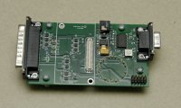
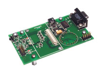
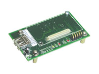
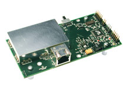

The TinyOS development environment includes features to ease programming devices. The mica family of motes has a diverse set of boards which connect a mote to a PC for programming. TinyOS 2.0 supports the following mica family programming boards
| Name | Picture | |
| Parallel port programming board (e.g., Crossbow MIB500) |  | |
| Serial port programming board (e.g., Crossbow MIB510) |  | |
| USB serial programming board (e.g., Crossbow MIB520) |  | |
| Ethernet programming board (e.g., Crossbow MIB600) |  |
The second key feature permits programming each device with a unique address attribute without having to compile the application each time.
This document describes how to use these features in TinyOS 2.0.
The standard programming software used in TinyOS is the µ In-System Programmer or 'uisp'. This program, which comes as a part of the TinyOS release, takes various arguments according to the programmer hardware and the particular programming action desired (erase, verify, program, etc..). To simplify using this tool, the TinyOS environment invokes uisp for you with the correct arguments whenever you issue an 'install' or 'reinstall'. You only need specify the type of device you are using and how to communicate with it. This is done using environment variables.
This is the default programmer device. No additional command line parameters need to be specified when using this programmer.
Add mib510,<dev> where <dev> is the name of the serial port where the device is attached (i.e. /dev/ttyS0).
example:
make micaz install mib510,/dev/ttyS1
Add eprb,<addr> where <addr> is the IP address of the ethernet device (e.g., 10.0.0.12).
example:
make micaz install eprb,192.168.2.23